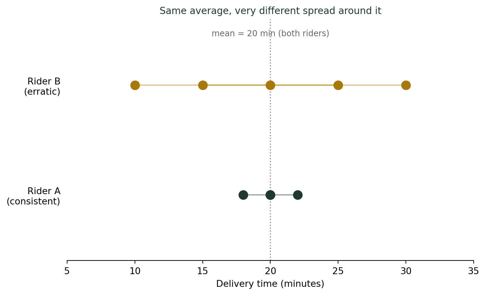
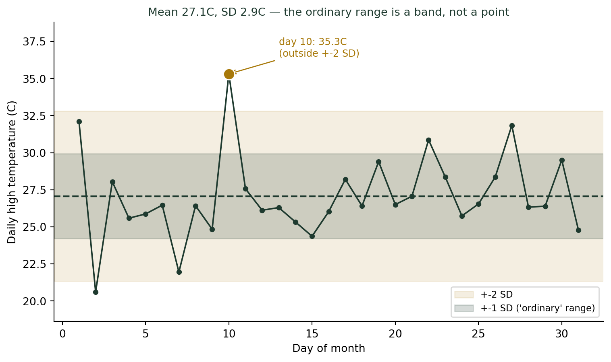

(흩어짐과 역설) “보통”의 폭을 재는 법 — 표준편차란 무엇인가
통계기초
기술통계
’오늘 낮 기온은 평년과 같은 27도’라는 예보를 들으면 안심이 된다. 그런데 평년 기온이 항상 정확히 27도였다는 뜻일까, 아니면 24도와 30도를 오가다 평균이 27도가 된 걸까? 이 둘을 구별해주는 숫자가 표준편차다. 배달 라이더 두 명의 배달 시간을 직접 손으로 계산해보며 표준편차의 의미를 알아본다.
“보통”이라는 말의 숨은 폭
일기예보에서 “오늘 낮 최고기온은 평년과 같은 27도가 되겠습니다”라는 문장을 들으면 마음이 놓인다. 그런데 이 문장을 곰곰이 뜯어보면 숨겨진 질문이 하나 있다. 평년 기온이 매번 정확히 27도에 가까웠다는 뜻일까, 아니면 어떤 해는 22도, 어떤 해는 32도였는데 그걸 다 평균 내니 27도가 나온 걸까? 이 둘은 완전히 다른 상황이다. 앞의 경우라면 오늘 30도만 돼도 이례적인 더위지만, 뒤의 경우라면 30도는 그저 “그럴 수 있는” 평범한 하루다. 평균 하나만으로는 이 둘을 구별할 수 없다. 필요한 건 “보통”이 실제로 어느 정도의 폭을 가지고 움직이는지 알려주는 숫자 — 오늘부터 이번 주 다룰 표준편차(standard deviation)다.
표준편차, 손으로 직접 계산해보자
배달 라이더 두 명이 있다고 하자. 둘 다 최근 5건의 배달에 걸린 시간이 평균 20분으로 똑같다. 그런데 개별 기록을 보면 사뭇 다르다.
| 라이더 | 배달 시간(분) | 평균 |
|---|---|---|
| A (일관형) | 18, 20, 22, 20, 20 | 20분 |
| B (들쭉날쭉형) | 10, 15, 20, 25, 30 | 20분 |
표준편차는 각 관측값이 평균에서 얼마나 떨어져 있는지(편차, deviation)를 하나의 대표 숫자로 요약한 것이다. 계산 순서는 이렇다.
- 각 값에서 평균을 뺀다 (편차).
- 편차를 제곱한다 (음수를 없애고, 큰 편차에 더 큰 벌점을 주기 위해).
- 제곱한 값들을 더하고, (\(n-1\))로 나눈다 — 이것이 분산(variance) \(s^2\)이다.
- 분산에 제곱근을 씌운다 — 이것이 표준편차 \(s\)다. 제곱근을 씌우는 이유는 단위를 원래 데이터와 같게(이 경우 “분”) 되돌리기 위해서다.
라이더 A는 편차가 \(-2, 0, 2, 0, 0\), 제곱하면 \(4, 0, 4, 0, 0\), 합이 8, \(8/(5-1) = 2.0\), 표준편차는 \(\sqrt{2.0} \approx\) 1.41분이다. 라이더 B는 편차가 \(-10, -5, 0, 5, 10\), 제곱하면 \(100, 25, 0, 25, 100\), 합이 250, \(250/4 = 62.5\), 표준편차는 \(\sqrt{62.5} \approx\) 7.91분이다. 평균은 똑같이 20분이지만, 라이더 A에게 배달을 맡기면 거의 항상 18~22분 안에 도착하고, 라이더 B는 10분 만에 올 수도 30분이 걸릴 수도 있다. 평균이 “어디쯤”을 말해준다면, 표준편차는 “그 주변에서 얼마나 흔들리는가”를 말해준다.
표준편차가 알려주는 것: “보통”의 실제 범위
표준편차의 진짜 쓸모는 여기서부터 시작된다. 분포가 좌우 대칭인 종 모양(정규분포에 가까운 모양)이라면, 평균으로부터 표준편차 1개 거리 안에 전체의 약 68%가, 2개 거리 안에 약 95%가 들어온다는 경험적 규칙이 있다. 이걸 8월 한 달의 낮 최고기온에 적용해보자.

평균만 알면 “27도”라는 점 하나뿐이다. 표준편차까지 알면 “대략 24~30도 사이가 보통이고, 그 밖으로 벗어나면 이례적”이라는 범위가 생긴다. 10일째의 35.3도는 평균보다 8도 이상 높은데, 이는 단순히 “평균보다 더운 날”이 아니라 표준편차 2개(±2σ) 범위를 확실히 벗어난, 통계적으로 드문 날이라는 뜻이다. 표준편차가 없다면 “오늘 좀 덥네” 정도의 감상에 그치지만, 표준편차가 있으면 “이 정도 더위는 이 달에 한 번 나올까 말까 한 수준”이라고 구체적으로 말할 수 있다.
표준편차를 읽는 법
- 표준편차가 작다 → 값들이 평균 가까이 몰려 있다. 예측 가능하고 “믿을 만하다.”
- 표준편차가 크다 → 값들이 넓게 흩어져 있다. 평균만으로는 실제로 무슨 일이 일어날지 가늠하기 어렵다.
- 평균 ± 표준편차 범위가 대략 “보통”의 실질적인 정의다. 그 범위를 크게 벗어난 값이라야 “이례적이다”라고 말할 자격이 있다.
더 깊이: 실증적 법칙과 분산의 정의
강의노트 〈수리통계학 2. 확률변수 — 실증적 법칙(Empirical Rule)〉는 분포가 좌우 대칭인 종 모양일 때 \(P(|X-\mu| < k\sigma)\)가 \(k=1\)이면 적어도 68%, \(k=2\)면 적어도 95%, \(k=3\)이면 적어도 99.8%라고 정리한다 — 오늘 기온 그래프에서 그려본 두 개의 띠가 바로 이 법칙을 시각화한 것이다. 이 법칙이 성립하는 근거는 〈수리통계학 4. 기대값 — 주요 기대값〉이 정의하는 분산 \(\text{Var}(X) = E[(X-\mu)^2]\)과 표준편차 \(\sigma = \sqrt{\text{Var}(X)}\)에 있다. 오늘 라이더 예제에서 손으로 계산한 “편차 제곱의 평균”이 바로 이 정의를 표본 자료에 그대로 적용한 것이다.
결론: 평균 뒤에는 항상 폭이 있다
나는 학생들에게 평균을 배운 다음 날 표준편차를 가르치며 이렇게 말한다. “평균은 질문의 절반에만 답합니다.” 어디쯤에 있는지는 평균이 말해주지만, 그 주변이 얼마나 넓은지는 표준편차만이 말해줄 수 있다. 오늘 소개한 계산법 — 편차를 구하고, 제곱하고, 평균 내고, 제곱근을 씌우는 이 네 단계 — 은 이번 주 나머지 나흘 동안 다룰 이상치, 표준점수, 변동계수, 심슨의 역설을 이해하는 데 필요한 가장 기본적인 도구다. “보통”이라는 말을 들으면, 이제부터는 그 폭이 얼마인지부터 물어보자.
참고 자료
- Empirical Rule (68-95-99.7 rule) — 정규분포에 가까운 대칭 분포에서 성립하는 경험적 법칙.